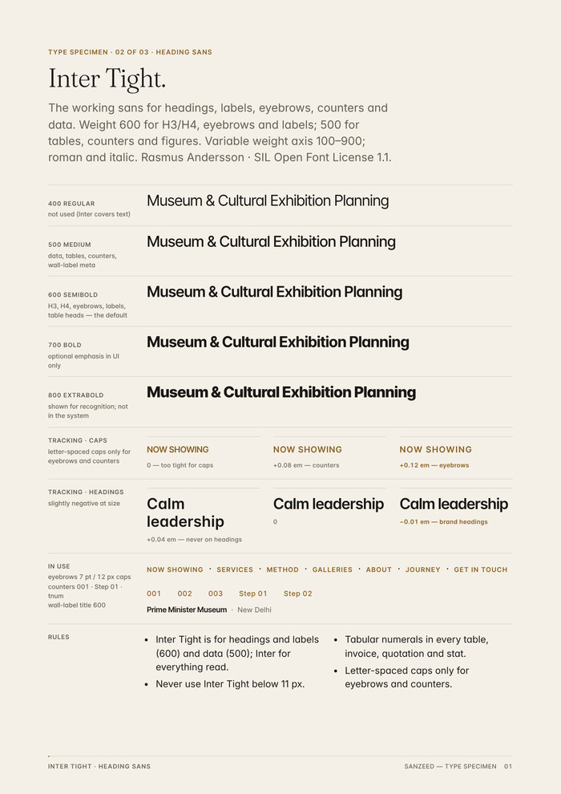
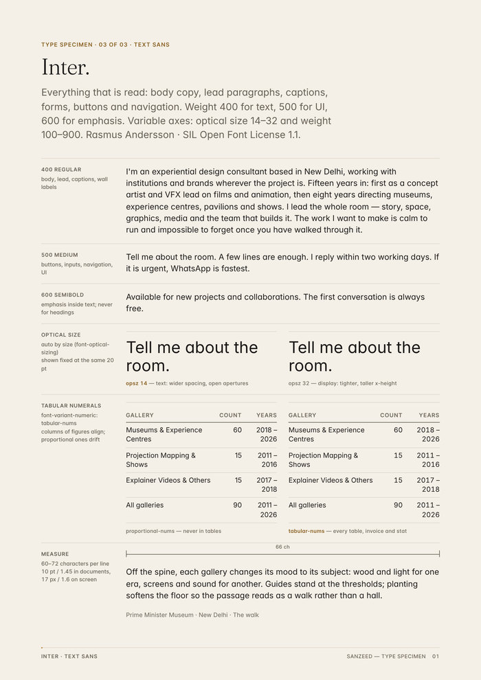
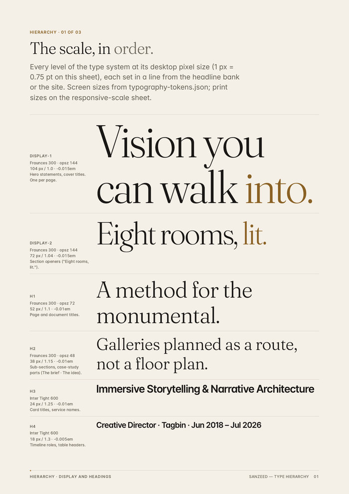
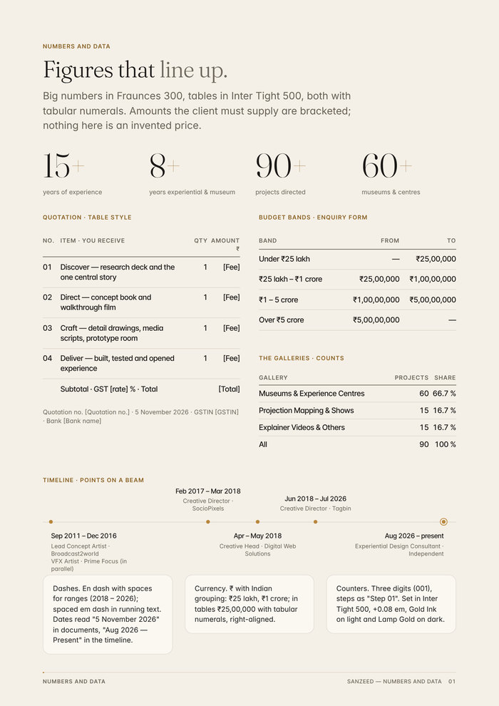
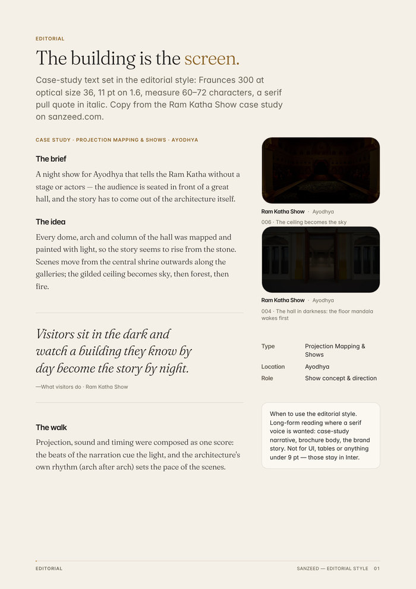

Typography.
Serif speaks, sans works. Fraunces 300 for display; Inter Tight for headings, labels and data; Inter for everything read. All three are open fonts under the SIL OFL.
- 13.1The three families
- 13.2The scale · desktop, tablet, mobile
- 13.3Print scale and hierarchy
- 13.4Rules, do and don’t
- 13.5Specimen sheets
Serif speaks, sans works.
Font files (TTF + woff2 + OFL.txt) in 04_TYPOGRAPHY/Font_Files; @font-face rules in brand.css. Install the TTFs for desktop apps; serve the woff2 subsets on the web.
abcdefghijklmnopqrstuvwxyz 0123456789
Headlines, statements, big numerals, pull quotes (italic). Always weight 300; optical size 144 above 48 px, 72 for 24–48 px, 36 below. SOFT 30, WONK 0. Never letter-spaced, never below 16 px / 9 pt.
Undercase Type (Phaedra Charles, Flavia Zimbardi) · SIL OFL 1.1 · variable: opsz, wght, SOFT, WONK; roman + italic
abcdefghijklmnopqrstuvwxyz 0123456789
001 · STEP 02
H3 and H4, card titles, eyebrows (caps, +0.12 em, gold), counters (+0.08 em), table heads, the descriptor in the lockup; weight 500 with tabular numerals for data. Never below 11 px.
Rasmus Andersson · SIL OFL 1.1 · variable: wght; roman + italic
abcdefghijklmnopqrstuvwxyz 0123456789
I lead the whole room — story, space, graphics, media and the team that builds it. The first conversation is always free; I reply within two working days.
Body, lead, small, captions and wall labels; weight 500 for buttons, inputs and navigation. Measure 60–72 characters; paragraph spacing one line, no indents. Feature cv11 on.
Rasmus Andersson · SIL OFL 1.1 · variable: opsz, wght; roman + italic
Sixteen sizes, three breakpoints.
From 04_TYPOGRAPHY/typography-tokens.json → scale_px; brand.css carries the same scale as fluid clamp() variables (--fs-*) and classes (.t-*). Breakpoints: desktop ≥ 1280, tablet 834, mobile 390.
| Token | Family · weight | Desktop px / lh | Tablet | Mobile | Tracking | Use |
|---|---|---|---|---|---|---|
| display-1 | Fraunces 300 · opsz 144 | 104 / 1.0 | 72 / 1.02 | 44 / 1.04 | -0.015em | Hero statements, cover titles. One per page. |
| display-2 | Fraunces 300 · opsz 144 | 72 / 1.04 | 52 / 1.06 | 36 / 1.08 | -0.015em | Section openers ("Eight rooms, lit."). |
| h1 | Fraunces 300 · opsz 72 | 52 / 1.1 | 40 / 1.1 | 32 / 1.12 | -0.01em | Page and document titles. |
| h2 | Fraunces 300 · opsz 48 | 38 / 1.15 | 30 / 1.15 | 26 / 1.2 | -0.01em | Sub-sections, case-study parts (The brief · The idea). |
| h3 | Inter Tight 600 | 24 / 1.25 | 22 / 1.25 | 20 / 1.3 | -0.01em | Card titles, service names. |
| h4 | Inter Tight 600 | 18 / 1.3 | 18 / 1.3 | 17 / 1.3 | -0.005em | Timeline roles, table headers. |
| lead | Inter 400 | 21 / 1.5 | 19 / 1.5 | 18 / 1.5 | 0 | Intro paragraphs; colour fg-2. |
| body | Inter 400 | 17 / 1.6 | 16 / 1.6 | 16 / 1.6 | 0 | Running text. Measure 60–72 characters. Paragraph spacing 1em. |
| small | Inter 400 | 15 / 1.55 | 15 / 1.55 | 14 / 1.55 | 0 | Secondary text, footnotes, form help. |
| caption | Inter 400 | 13 / 1.5 | 13 / 1.5 | 12 / 1.5 | 0 | Wall labels under images: Title · Place · one line. Colour fg-3. |
| eyebrow | Inter Tight 600 | 12 / 1.2 | 12 / 1.2 | 11 / 1.2 | +0.12em · caps | Section labels: NOW SHOWING, METHOD. Colour accent-text. |
| ui | Inter 500 | 15 / 1.2 | 15 / 1.2 | 15 / 1.2 | 0 | Buttons, inputs, navigation. Minimum tap target 44 px. |
| stat | Fraunces 300 · opsz 144 · tnum | 64 / 1.0 | 52 / 1.0 | 40 / 1.0 | 0 | Big numbers (90+, 15+). The plus sign is gold. |
| quote | Fraunces 300 · opsz 72 · italic | 34 / 1.3 | 28 / 1.3 | 24 / 1.35 | 0 | Pull quotes, the personal line. Attribution in caption style. |
| data | Inter Tight 500 · tnum | 14 / 1.4 | 14 / 1.4 | 13 / 1.4 | 0 | Tables, invoices, quotations, budgets — tabular numerals always. |
| editorial | Fraunces 300 · opsz 36 | 19 / 1.65 | 18 / 1.65 | 17 / 1.65 | 0 | Long-form reading (case-study narrative, brochure body) where a serif voice is wanted. |
| counter | Inter Tight 500 · tnum | 13 / 1.2 | 13 / 1.2 | 12 / 1.2 | +0.08em | 001 / 002 counters, STEP 01. Colour accent-text. |
Fallback stacks: Fraunces → Iowan Old Style, Palatino, Georgia, serif · Inter Tight → SF Pro Display, system sans · Inter → SF Pro Text, system sans.
Points on paper.
The print sizes from typography-tokens.json → print_scale_pt, as applied by the kit’s doc.css to every A4 document in the package — and this manual.
| Token | Face | Size | Line height |
|---|---|---|---|
| doc-title | Fraunces 300 opsz 72 | 28 pt | 1.1 |
| doc-h2 | Fraunces 300 | 18 pt | 1.2 |
| doc-h3 | Inter Tight 600 | 11 pt | 1.3 |
| doc-body | Inter 400 | 10 pt | 1.45 |
| doc-small | Inter 400 | 8.5 pt | 1.4 |
| doc-caption | Inter 400 | 7.5 pt | 1.35 |
| doc-eyebrow | Inter Tight 600 caps +0.12em | 7 pt | 1.2 |
| doc-table | Inter Tight 500 tnum | 9 pt | 1.35 |
| business-card-name | Inter Tight 600 | 9 pt | 1.2 |
| business-card-detail | Inter 400 | 7 pt | 1.4 |
| poster-headline-A2 | Fraunces 300 opsz 144 | 140 pt | 1.0 |
| signage cap height | Fraunces / Inter Tight | 25 mm at 3 m viewing · 80 mm at 10 m viewing · 240 mm at 30 m viewing | — |
Visitors walk the whole line of leaders without a map, and come out knowing the order by heart. The script came first; every room, screen and surface carries a line of it.
Small 8.5 pt — secondary text and footnotes.
Prime Minister Museum · New Delhi · A long corridor of every Prime Minister, walked beneath a tricolour canopy of light.
| Step | Deliverable | Weeks |
|---|---|---|
| 01 Discover | Research deck | 4 |
| 02 Direct | Concept book · walkthrough film | 10 |
Live type at print size: doc-title 28 pt · doc-h2 18 pt · doc-h3 11 pt · body 10 pt · small 8.5 pt · caption 7.5 pt · eyebrow 7 pt caps · table 9 pt tabular.
Eight rules, four tiles.
The rules from typography-tokens.json, and the mistakes they prevent. Headlines are sentence case and end with a full stop; the last word may be lit or dim, never both.
- Headlines are sentence case and end with a full stop.
- The last word of a headline may be set in Lamp Gold (.lit) or Mist (.dim) — never both in one composition.
- Fraunces is always weight 300 (Light); use opsz 144 above 48 px, 72 for 24–48 px, 36 below.
- Inter Tight is for headings/labels (600) and data (500); Inter for everything read.
- Never use Inter Tight below 11 px or Fraunces below 16 px.
- Tabular numerals (tnum) in every table, invoice, quotation and stat.
- Letter-spaced caps only for eyebrows and counters; never letter-space Fraunces.
- Paragraph spacing = 1 line; no indents. Measure 60–72 characters.
Ten sheets, one reference.
The specimen sheets (HTML + PDF + PNG) and the 20-page Font_Reference.pdf in 04_TYPOGRAPHY are the designer’s and developer’s hand-off; Font_Licensing.md states the OFL obligations.








